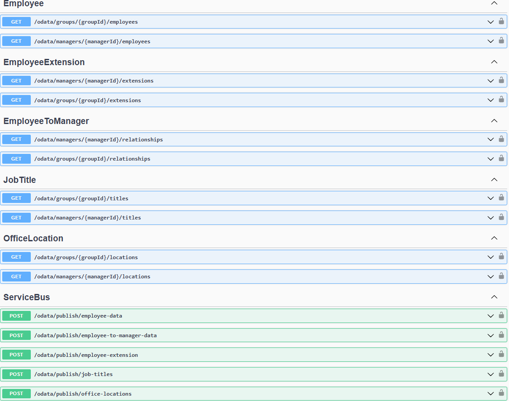

HBS Orgmanagement Handler is an event-driven system designed to manage and distribute organizational data across multiple systems within the RealCore Group. The handler integrates with external services through a message bus system, enabling seamless communication between modules without exposing direct interfaces.

Key Features:
- Event-Driven Architecture: Implements a pub-sub model using MassTransit and Azure Service Bus to handle inter-system communication.
- Unit Data Synchronization: Retrieves organizational data for units of RealCore Group by querying Microsoft Graph API using unit or CEO IDs.
- Data Persistence: Fetched data is securely stored in the handler’s database and distributed to other modules upon request.
- Seamless System Integration: Enables other systems to request unit hierarchy and employee information without requiring direct API exposure.
- Dockerized Event Handler: A dedicated Docker container hosts the event listener, ensuring scalability and isolation of processes.
- Request-Response Model: Uses MassTransit’s request-response mechanism to fetch and return data synchronously over the bus.
Technical Specifications:
- Backend Technologies: .NET Core (C#) for event handler development and MassTransit for message-driven architecture.
- Infrastructure: Hosted on Azure Service Bus with Docker containers managing distributed event handlers.
- Data Integration: Microsoft Graph API fetches employee and unit data, which is saved and processed asynchronously.
- Security: All requests and responses are processed securely over HTTPS and authenticated through Azure Entra ID.
- Scalability: Docker containers enable easy scaling and deployment of multiple handlers as needed.
- Communication: Implements pub-sub patterns, ensuring distributed systems can subscribe to unit updates without direct dependencies.
How It Works:
- The Orgmanagement Handler listens for incoming requests on Azure Service Bus.
- Requests are processed by querying Microsoft Graph API to retrieve relevant employee or unit data.
- Retrieved data is saved in the handler database and forwarded to other modules using the pub-sub pattern.
- The handler synchronously responds to requesting systems through MassTransit’s request-response framework.
Event Categories:
- Hierarchy Queries: Retrieve employee hierarchy based on unit or CEO ID.
- Unit Data Requests: Fetch comprehensive unit details and distribute them to subscribing systems.
- Real-Time Updates: Synchronize unit and employee data across multiple RealCore modules.